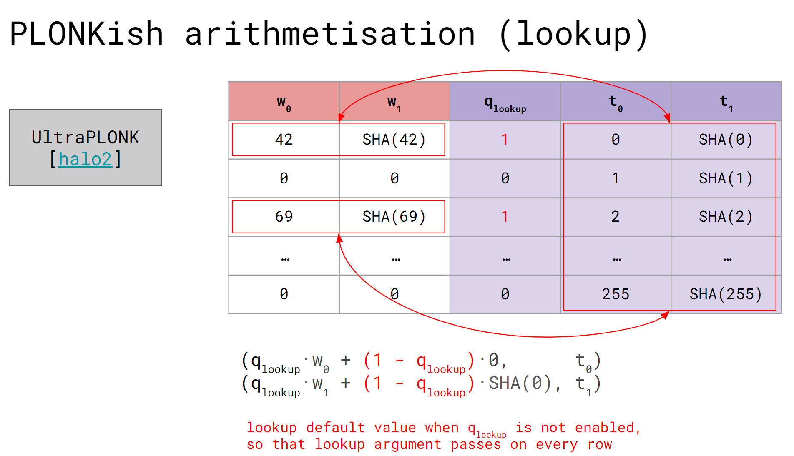
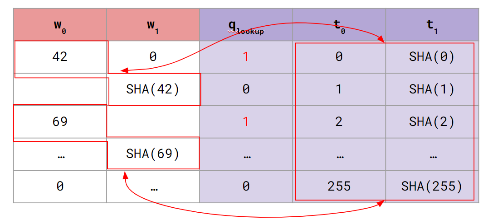
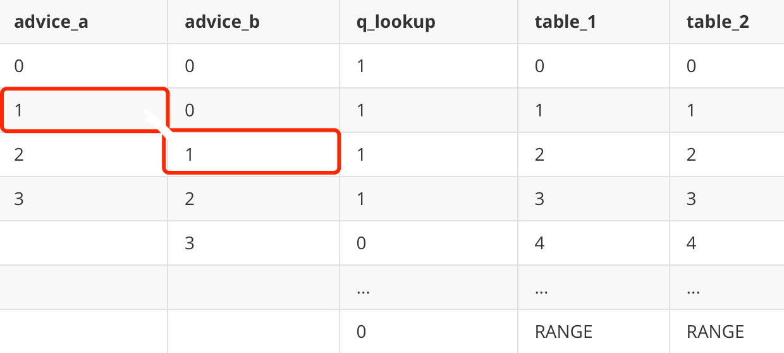

- 作者: @Po@Ethstorage.io
- 时间: 2023-10-31
- 校对: @Demian
lookup
前面的章节中我们介绍了 Halo2 的 API 和电路布局等核心概念，这节则介绍 Plonk 证明系统中基于 permutation argment 抽象出的一个强大功能 lookup 。Halo2 中使用的 lookup 对 plookup 进行了简化，可以约束一列或多列的 cells 的值属于对应的 lookup 列。
如下图，我们可以通过 lookup 约束 两列中的第 1、3 行属于查找表( 列)中的某一行; 对于不需要查找的则约束其属于查找表的某个默认行（自己指定）。 
关于 Zcash 版本的 lookup，有两个问题需要注意:
- 多列 lookup 不同列的相同行必须同时存在于查找表中，Halo2 底层通过一个随机数将各列对应行的 row 组合起来使其回归到单列 lookup;
- 多列 lookup 时，需约束的多列 witness 不一定在同一行（如下图中的 在第一行， 在第二行，这 2 个 witness 不同行），但是查找表中对应的所有列是在同一行（在 lookup table 中 2 个 witness 对应的 42, SHA(42) 是需要再同一行的）。比如上述例子也可以进行如下的 lookup: 
同时可参考对不在同一行的两列进行 lookup 的示例代码: halo2-tutorials/chap_4/circuit_1。
单列 lookup
首先从最简单的单列 lookup 介绍如何使用 lookup API。我们的目的是证明 a[N] 数组里的每一个 value 都在 [0, RANGE] 这个范围里面：
private inputs: a[N]
constant: RANGE
s.t: a[i] ∈ [0, RANGE], ∀ i ∈ [0, N-1]
若直接采用 gate 约束的话，我们需要设计形如
这样一个连乘表达式约束的电路，这种方式固然直观，但问题在于：当 RANGE 很大时 (比如 )，电路的 degree 会很高, 这会导致整个 proof 很大。
因此，我们可以采用 lookup 方式实现（回忆 permutation argument 只会将 degree 增加 1)，将 这些值填入 TableColumn 中 ( Zcash 版本的 Halo2 只支持静态查找表, 因此只能填入 TableColumn)，并借助 lookup API 来证明 所有的 a[i] 属于该 TableColumn 的某一行。
整个电路结构如下:
| adv | q_lookup | table |
|---|---|---|
| a[0] | 1 | 0 |
| a[1] | 1 | 1 |
| a[2] | 1 | 2 |
| a[3] | 1 | 3 |
| a[4] | 1 | 4 |
| … | … | … |
| a[N] | 1 | N-1 |
| 0 | N | |
| … | … | |
| 0 | RANGE |
完整代码见: halo2-tutorials/chap_4/circuit_2
电路配置及 lookup 约束
如上表电路需要 1 列 Advice , 1 列 TableColumn, 1 列 Selector :
#![allow(unused)] fn main() { #[derive(Debug, Clone)] struct RangeConfig<F:PrimeField, const RANGE: usize, const NUM: usize>{ value: Column<Advice>, table: LookUpTable<F, RANGE>, q_lookup: Selector, } }
该电路配置定义为 RangeConfig，将其中的查找表单独定义为 LookUpTable。下面代码的 [(q_lookup * v, table.table)] 即表示：当 q_lookup 启用时，v 需要存在于 table 查找表中。相应代码为:
#![allow(unused)] fn main() { impl <F:PrimeField, const RANGE: usize, const NUM: usize> RangeConfig<F, RANGE, NUM>{ fn configure(meta: &mut ConstraintSystem<F>,value: Column<Advice>) -> Self { let q_lookup = meta.complex_selector(); let table = LookUpTable::<F,RANGE>::configure(meta); meta.lookup(|meta| { let q_lookup = meta.query_selector(q_lookup); let v = meta.query_advice(value, Rotation::cur()); vec![(q_lookup * v, table.table)] }); RangeConfig {value, table, q_lookup} } fn assign( &self, mut layouter: impl Layouter<F>, value: [Value<Assigned<F>>;NUM] ) -> Result<ACell<F>,Error> { layouter.assign_region(|| "value to check", |mut region|{ //instantiate a new region, so it's not ref self.q_lookup.enable(&mut region, 0)?; let mut cell= region.assign_advice(||"value", self.value, 0, || value[0]).map(ACell); for i in 1..value.len() { self.q_lookup.enable(&mut region, i)?; cell = region.assign_advice(||"value", self.value, i, || value[i]) .map(ACell); } cell }) } } }
lookup 必须使用 complex_selector，因为 Halo2 可以根据这个标记知道这种 Selecotr 列不需要优化，而普通的 Selector 则可能会被 Layouter 进行合并等优化操作。
对于 LookUpTable, 使用 assign_table 来填充 witness :
#![allow(unused)] fn main() { #[derive(Debug, Clone)] pub(crate) struct LookUpTable<F:PrimeField, const RANGE: usize> { pub(crate) table: TableColumn, _maker: PhantomData<F> } impl <F:PrimeField, const RANGE: usize> LookUpTable<F, RANGE> { pub fn configure(meta: &mut ConstraintSystem<F>) -> Self { let table = meta.lookup_table_column(); Self {table, _maker: PhantomData } } pub fn load(&self, layouter: &mut impl Layouter<F>) -> Result<(), Error>{ layouter.assign_table( || "load range lookup table", |mut table|{ for value in 0..RANGE{ table.assign_cell(||"table cell", self.table, value, || Value::known(F::from(value as u64)))?; } Ok(()) }) } } }
电路具体的 Trait 方法实现就比较简单了，在此不再赘述。
多列 lookup
还可以对多列 witness 与对应的多列查找表进行 lookup 约束。本小节考虑如下例子: 证明某个值只有 bit[N] 比特位:
private inputs: a[N], bit[N]
s.t: a[i] ≤ 2^bit[i] -1， ∀ i ∈ [0, N-1]
具体来说，假设对于一个 8 位的查找表，它可以存储 个可能的值（即 [0,255] ），但我们并不总是需要用所有 256 个值，也就是即使查找表可以存储 8 位的值，我们也可以使用它来约束小于 8 位的值。
例如，对于一个 1 位的值，我们只需查找两种可能的值（0 或 1）；对于一个 2 位的值，我们可以查找四种可能的值（00、01、10 或 11）…
举个具体的例子：比如某 Prover 想证明其 value 确实只有 5 位 (即 value <= 2^5 - 1 = 31 ) ，
- (value = 31/32, bit = 5 ) 是 private value.
- 对于 value = 31，其二进制表达为
11111，确实只有 5 位，满足约束 - 对于 value = 32，其二进制表达为
100000，其位数到达了 6 位，但是 Prover 填入电路的 bits 是 5 ，(这里你可以认为这是一个 malicious Prover)，它想作弊，但这是不可能的！ Prover 传入的这 2 个 private inputs 不满足 lookup table 在该处的约束。
我们可以设计两列TableColumn, 其中一列 lookup table 为整数值 table_value，另一列为其对应的 bit 位数 table_n_bits；
并约束 witness 中值那一列 value 和比特位那一列 bit 属于前述的两列 TableColumn lookup table
| value | bit | q_lookup | table_n_bits | table_value |
|---|---|---|---|---|
| v[0] | 0 | 1 | 1 | 0 |
| v[1] | 1 | 1 | 1 | 1 |
| … | … | … | 2 | 2 |
| … | … | … | 2 | 3 |
| … | … | … | 3 | 4 |
完整代码见: halo2-tutorials/chap_4/circuit_3
电路配置
这里我们重点关注 lookup 约束相关代码:
#![allow(unused)] fn main() { #[derive(Debug, Clone)] struct RangeCheckConfig<F:PrimeField, const NUM_BITS: usize, const RANGE: usize>{ value: Column<Advice>, bit: Column<Advice>, q_lookup: Selector, table: RangeCheckTable<F, NUM_BITS, RANGE> } impl <F:PrimeField, const NUM_BITS: usize, const RANGE: usize> RangeCheckConfig<F, NUM_BITS, RANGE> { fn configure(meta: &mut ConstraintSystem<F>, ) -> Self { //when to configure the colum, during config or circuit instance: configure time let value = meta.advice_column(); let bit = meta.advice_column(); let q_lookup = meta.complex_selector(); let table = RangeCheckTable::configure(meta); meta.lookup(|meta|{ let default_value = Expression::Constant(F::ZERO); let default_bit = Expression::Constant(F::ONE); let mut v = meta.query_advice(value, Rotation::cur()); let mut b = meta.query_advice(bit, Rotation::cur()); let q = meta.query_selector(q_lookup); let non_q = Expression::Constant(F::ONE) - q.clone(); v = v*q.clone() + non_q.clone()*default_value; b = b*q + non_q*default_bit; vec![(b, table.n_bits),(v, table.value)] }); RangeCheckConfig { value,bit, q_lookup, table } } ... } }
这里我们对于不需要 lookup 的行为其指定默认值保证所有行均满足 lookup 约束， vec![(b, table.n_bits), (v, table.value)] 则范围两组对应的(cell expression, lookup table)。
多列错行 lookup table
如下图所示，假若想约束的的 2 列 witness 不在同一行，而是错行的：

对于这种情况 halo2 也可以灵活地处理：
#![allow(unused)] fn main() { impl<F: PrimeField> LookupChip<F> { fn construct(config: LookupConfig) -> Self { LookupChip { config, _marker: PhantomData, } } fn configure(meta: &mut ConstraintSystem<F>) -> LookupConfig { let a = meta.advice_column(); let b = meta.advice_column(); let s = meta.complex_selector(); let t1 = meta.lookup_table_column(); let t2 = meta.lookup_table_column(); meta.enable_equality(a); meta.enable_equality(b); meta.lookup(|meta| { let cur_a = meta.query_advice(a, Rotation::cur()); let next_b = meta.query_advice(b, Rotation::next()); let s = meta.query_selector(s); // we'll assgin (0, 0) in t1, t2 table // so the default condition for other rows without need to lookup will also satisfy this constriant vec![(s.clone() * cur_a, t1), (s * next_b, t2)] }); LookupConfig { a, b, s, t1, t2 } } fn assign( &self, mut layouter: impl Layouter<F>, a_arr: &Vec<Value<F>>, b_arr: &Vec<Value<F>>, ) -> Result<(), Error> { layouter.assign_region( || "a,b", |mut region| { for i in 0..a_arr.len() { self.config.s.enable(&mut region, i)?; region.assign_advice(|| "a col", self.config.a, i, || a_arr[i])?; } for i in 0..b_arr.len() { region.assign_advice(|| "b col", self.config.b, i, || b_arr[i])?; } Ok(()) }, )?; }
在上面的代码中，
- 利用
[(s.clone() * cur_a, t1), (s * next_b, t2)]这 2 个需要同时成立的约束，我们同时约束了a的当前行和b的下一行需要存在于多列查找表中。 - 在 assign 函数中，我们只对 advice column
a进行了约束，而没有对 advice columnb应用 selector，目的是只对 a 有值的这些行进行约束。如此就给 b 列提供了更多的灵活性。
#![allow(unused)] fn main() { #[test] fn test_lookup_on_different_rows() { let k = 5; let a = [0, 1, 2, 3, 4]; let b = [0, 0, 1, 2, 3, 4, 5, 6, 7, 8, 9]; let a = a.map(|v| Value::known(Fp::from(v))).to_vec(); let b = b.map(|v| Value::known(Fp::from(v))).to_vec(); let circuit = MyCircuit { a, b }; let prover = MockProver::run(k, &circuit, vec![]).unwrap(); prover.assert_satisfied(); } }
- 如上代码，只对 a 列有值的情况进行了约束，b 列的取值变得灵活。
lookup Debug 相关
在 lookup 电路设计时，以典型的 halo2-tutorials/chap_4/circuit_1 为例，可能会遇到如下报错:
#![allow(unused)] fn main() { error: lookup input does not exist in table (L0, L1) ∉ (F0, F1) Lookup inputs: 每一个 lookup 会出现这一行,整个 lookup 分为两组: L0 和 L1 L0 = x1 * x0 :，这是第一组 (witness: A0 列, table: F2 列), 电路中为`(b, table.n_bits)` ^ | Cell layout in region 'a b': | | Offset | A0 | F2 | | +--------+----+----+ | | 1 | x0 | x1 | <--{ Lookup inputs queried here | | Assigned cell values: | x0 = 1 | x1 = 1 L1 = x1 * x0 : 这是第二组 (witness: A0 列, table: F2 列), 电路中为 `(v, table.value)` ^ | Cell layout in region 'a b': | | Offset | A1 | F2 | | +--------+----+----+ | | 1 | | x1 | <--{ Lookup inputs queried here | | 2 | x0 | | | | Assigned cell values: | x0 = 0x3 | x1 = 1 }
理解上述报错，可以让我们更快地调试。报错结构如何理解在上图中均已表明，且 cell 的相对值也体现的很清楚(注意 L1 中的 x0 相对 L0 中的 x0 向下偏移了 1 , 这与电路一致)。
动态查找表 PSE Halo2's lookup_any API
注意到使用 Zcash 版本 Halo2 进行 lookup 约束时，由于没法对 TableColumn 进行 query_advice这导致除了 lookup 约束外，无法灵活地对 TableColumn 中的 cell 进行 gate 约束，即TableColumn必须在电路初始化阶段写死，无法再更改了，即只能进行静态查找。
因此，Zcash 团队的核心开发者为 PSE Halo2 版本开发了 lookup_any API, 使其也支持对任意类型的列，如Advice、FixedColumn 等进行 lookup, 即实现了动态查找表。lookup_any 使用方式与 lookup 没有太大的区别，来看其具体的一些例子
下面的代码中，定义了 2 个 lookup table： instance_table & advice_table :
#![allow(unused)] fn main() { #[test] fn bad_lookup_any() { impl Circuit<Fp> for FaultyCircuit { fn configure(meta: &mut ConstraintSystem<Fp>) -> Self::Config { let instance_table = meta.instance_column(); // lookup as Instance Columns let advice_table = meta.advice_column(); let a = cells.query_advice(a, Rotation::cur()); meta.annotate_lookup_any_column(instance_table, || "Inst-Table"); meta.enable_equality(instance_table); meta.annotate_lookup_any_column(advice_table, || "Adv-Table"); meta.enable_equality(advice_table); meta.lookup_any("lookup", |cells| { let advice_table = cells.query_advice(advice_table, Rotation::cur()); let instance_table = cells.query_instance(instance_table, Rotation::cur()); // .. vec![ ( q.clone() * a.clone() + not_q.clone() * default.clone(), instance_table, ), (q * a + not_q * default, advice_table), ]}); } // ... let custom_lookup_table = vec![vec![ Fp::from(1u64), Fp::from(2u64), Fp::from(4u64), Fp::from(6u64), ]]; let prover = MockProver::run( K, &FaultyCircuit {}, // This is our "lookup table". custom_lookup_table, ) .unwrap(); assert_eq!( prover.verify(), Err(vec![VerifyFailure::Lookup { name: "lookup".to_string(), lookup_index: 0, location: FailureLocation::InRegion { region: (1, "Faulty synthesis").into(), offset: 1, } }]) ); } }
如上代码的动态查找表中：
- 2 个 lookup table 在 Circuit
configure阶段被分别定义为了 instance column 和 advice columns，而后在 “lookup” 门约束中（lookup_any()），advice cola须满足 2 个约束：a需能在 lookup tableinstance_table中被查找到，且同时也- 能在 lookup table
advice_table中被查找到
- 在
synthesize()阶段，advice_table这个 lookup table 由 instance col 生成（可以理解为复制了一份instance_table到advice_table）- 在 “Good synthesis” 中，advice 的赋值都能在 2 个 lookup tables 中被查找到，满足约束；
- 而在 “Faulty synthesis” 中，
Fp::from(5)这个 advice 赋值不能在 lookup tables 中被查找到，所以不满足约束。
- Prover 在 prove 阶段，可以将 Public Input(PI) 或 advice column(witness) 作为 lookup table， 这种方式提供给了 halo2 电路更大的灵活度。
除此之外，还可以参考brainfuck zkvm的例子。